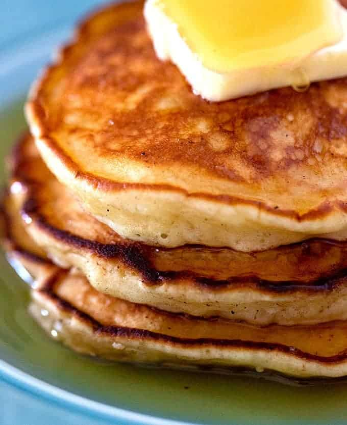

Home
The Best Pancake

Description
Best Pancake Recipe - This tasty pancake recipe is easy and has a secret ingredient that gives them the perfect fluffy pancake consistency.
Serving: 1/12th of the recipe | Calories: 113kcal | Carbohydrates: 17g | Protein: 3g | Fat: 3g | Saturated Fat: 1g | Cholesterol: 36mg | Sodium: 222mg | Potassium: 138mg | Sugar: 5g | Vitamin A: 145IU | Vitamin C: 0.1mg | Calcium: 71mg | Iron: 0.9mg
Ingredients
- 1 cup milk
- 1/2 cup sour cream
- 1/4 cup granulated sugar
- 2 large eggs
- 1 teaspoon vanilla extract
- 1 1/2 cups all purpose flour
- 2 teaspoons baking powder
- 1 teaspoon salt
- Butter for greasing the pan -about 3 tablespoons
- Maple syrup for serving
Steps
- In a large bowl, add the milk, sour cream, sugar, eggs, and vanilla. Whisk until combined. It’s ok to have small lumps of sour cream.
- Add the flour, baking powder, and salt. Stir just until no large clumps of dry flour remain, trying not to over mix. The batter should be very lumpy.
- Melt about ½ tablespoon of butter in a large non-stick skillet over medium-low heat until lightly bubbling and light brown.
- Ladle the batter into the skillet making 3-4 pancakes (about ¼ cup of batter each). Cook 3-4 minutes, until bubbles form on top of each pancake and the bottoms are golden brown.
- Flip the pancakes. Cook 1-2 minutes, until the bottoms are golden brown.
- Carefully wipe out any excess browned butter with paper towels. Repeat with the remaining butter and pancake batter.
- Serve warm with maple syrup.